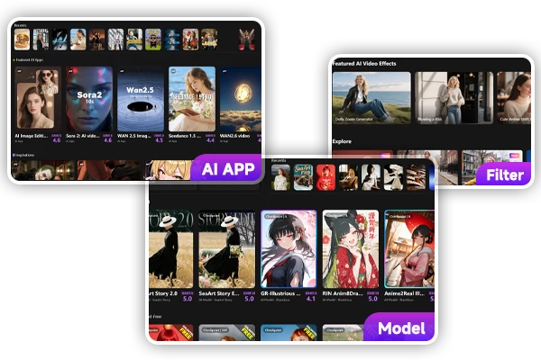
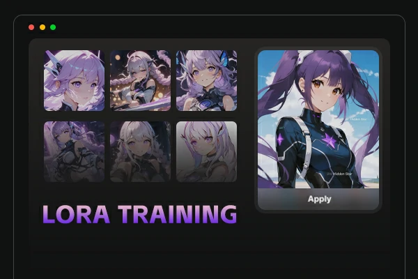

SeaArt 上手：从零到第一张 AI 图，手把手带你玩海艺
完全不需要任何基础，五分钟跑通第一张 AI 生图。从下载安装到模型选择、提示词技巧，三个核心功能帮你快速摸到门路，再把小白最常遇到的疑问一次说清。
这篇文章能带你从完全不懂 AI 生图到实际用起来——不需要懂代码，不需要买显卡，跟着点就行。
它到底是干嘛的
想象一下你手机里的相册 App，但它多了一个"魔法模式"：你跟它说一句"一只戴着宇航员头盔的橘猫漂浮在星云里"，过几秒钟，一张真的像画出来或者拍出来的图就生成了。这就是 SeaArt（海艺）这类 AI 创作工具做的事情。
不过它的能耐远不止写一句话出一张图。内置 70 万+ 模型和风格包、可以自己训练专属角色脸、支持云端搭建 ComfyUI 节点工作流把复杂操作串成流水线——说白了，打开 SeaArt官网 你就能看到，它把 AI 生图这一整套生态搬到了浏览器里，不用你自己折腾环境、下载显卡驱动、跑半小时才出一张图。
五分钟上手：从下载到第一次跑通
别担心，整个过程比装一个普通 App 快。
第一步：获取安装包。手机端直接去各自的应用商店搜就行，PC 端走官方下载，装完打开是一个很清爽的界面——左边导航栏、中间主工作区、右边参数面板，没什么看不懂的东西。
第二步：注册登录。用手机号或者第三方账号一键登，新用户会送一些算力额度，够你试手好几轮。
第三步：选模型。第一次进来直接点中间那个大大的"图像创作"卡片，进入创作页面。你会看到顶部有个模型下拉列表，新手别纠结，就选 SeaArt Image 系列——这是平台官方调优的底模，参数都预设好了，出图稳定，不会出现有些社区模型那种"全图崩坏"的惊喜。

第四步：写提示词 + 生成。在提示词输入框里写你想看到的画面。别想着用什么英文咒语，先用大白话就行："窗边一只橘猫，阳光斜射进来，油画质感"。然后点右侧的"生成"按钮，等几十秒钟，下面就会出结果。
就这四步，你已经跑通第一张 AI 图了。
上手后先玩这三个功能
能出图只是开始。这三个功能是新手最值得先碰的，每一个都能打开一个新世界。
功能一：模型库——找到属于你的那款风格。
点左上角的"模型库"图标，你会看到一个分类导航：独家、动漫、写实、角色、风格、服饰、风景……随便点一个进去比如"动漫"，里面会列出成千上万的模型卡片。每张卡片有预览图、评分和下载量——看评分和下载量准没错，分高的模型跑出来的效果通常稳定得多。
选中一个模型点进去，详情页有个"试用"按钮，平台已经准备好了示例提示词，你点一下就能直接看这模型跑出来是什么样。觉得还行，就点"应用到创作"，直接带到创作页开始用。
提示：收藏按钮记得点——遇到好模型存进去，下次直接从"我的收藏"调，不用再翻遍整个模型库。
功能二：LoRA 训练——让 AI 记住你想要的那张脸。
LoRA 是什么？简单理解：底模是一本通用的词典，LoRA 是你自己贴上去的便签条——它告诉 AI，"下次看到触发词的时候，就按这个特定的人/风格去画"。
比如你想让 AI 画你自己的女朋友，但社区里没有"我女朋友"这个 LoRA——那就在海艺自己训练一个。进入"LoRA 训练"页面，上传 10 到 20 张清晰的正脸照片，给她取个触发词（比如"meili"），选一个风格匹配的底模，点开始训练。整个过程五六分钟，训练完直接在创作页选"meili"这个 LoRA 叠加到底模上，提示词里一写触发词，AI 画出来的就是你女朋友了。
这个功能对有专属形象需求的人特别有用——比如电商店主想让自家产品有稳定的风格化展示、IP 创作者想让虚拟角色保持统一长相。

功能三：ComfyUI 工作流——把复杂操作串成一条线。
如果你不满足于"写一句话出一张图"，想要精确控制每一步——比如先出草稿、再高清放大、然后锐化加滤镜——那就要进工作流页面了。
海艺把 ComfyUI 这个专业级的节点编辑器搬到了云端，你不用自己装、不用配显卡，浏览器打开就能用。里面有几百个预设模板：人像修图、动漫生成、风格迁移、高清修复……挑一个你感兴趣的模板点进去，你会看到一个个方方块块的节点用线连在一起。比如一个基础工作流长这样：
加载底模 → 写提示词 → AI 采样生成 → 解码成图像 → 保存
新手不用一上来就自己搭，先从预设模板开始：改几个提示词里的词跑一遍看效果，观察每个节点是干嘛的，慢慢熟悉了再尝试增删节点自己搭。搭好的工作流可以反复跑、可以批量处理，对于需要固定风格大量出图的场景特别方便。遇到具体节点参数拿不准的，去SeaArt文档翻一下就行，写得挺细的。
小白的三个常见疑问
问：提示词怎么写才能出好图？英文还是中文？
都能识别，但英文的词汇库更丰富一些。刚开始写大白话就行，写多了慢慢摸索。一个实用的小技巧：先看模型详情页的示例提示词，模仿它的结构写——用什么结构和维度来描述画面，跟着学不会错。
问：为什么有时候生成出来的图不对？
几个常见原因：模型没选对（想画写实却选了动漫底模）、提示词太短太模糊（"画一个女生"不如"穿白色连衣裙的女生站在樱花树下"具体）、或者同一个模型跑的次数太少（多跑几次，AI 每次出的图都不一样）。如果连续几次都不满意，换个模型试试——不同模型擅长的东西差异很大。
问：算力用完了怎么办？要钱吗？
平台每天会送免费额度，日常玩一玩基本够用。如果不够了可以充值，价格不算贵。另外社区里有积分机制，分享自己训练的 LoRA 或者工作流让别人用，可以赚积分换算力。
下一步怎么走
能稳定出图之后，推荐试试训练第一个 LoRA——找一个你想固定的形象（宠物、朋友、卡通角色都行），按步骤训练一次，你就能体会到"AI 认识了一个专属的人"是一种什么感觉。再往前就是工作流了，把你最常用的操作流程串起来，以后批量出图只需要点一下按钮。
这套从生图、模型到 LoRA 训练、工作流的完整资料，社区维护了几份镜像方便不同地区的人访问。主更新源在 GitHub，国内网络直连慢的朋友可以去 Gitee 或 GitCode 拿，内容是同步的。